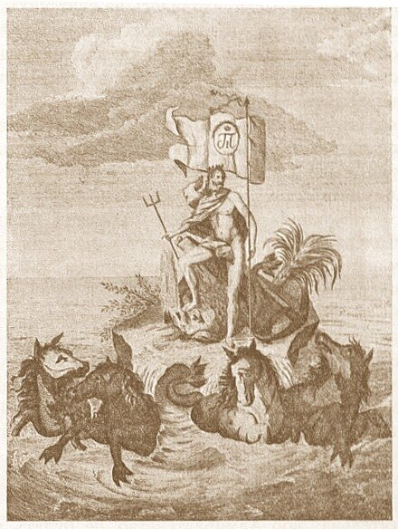

Остановимся теперь на законодательной регламентации деятельности флота при Павле I.
Устав военного флота
Петровский Морской устав 1720 года уже не отвечал требованиям времени. Необходио было принять новый основной документ, регламентирующий деятельность военного флота. Павел еще в гатчинский период начал разработку нового устава, получившего название «Устав военного флота по Высочайшему повелению Господина Императора Павла Первого». Естественно, он не знал и не мог знать всех особенностей морской службы на военных кораблях, поэтому в основу нового документа положил английский морской устав 1734 года. За шестьдесят с лишним лет флот существенно изменился, и положения старого английского устава, естественно, устарели. Это мог увидеть любой боевой офицер флота, но таковых в окружении Павла не оказалось. Новый устав, вышедший в 1797 году, стал отражением кабинетных изысков, а не обобщением боевого опыта.

Единственно, чем он принципиально отличался от Морского устава Петра I – это изъятием из его статей репрессий, полагавшихся за невыполнение положений устава, за небольшим исключением, когда за упущения по службе определялся арест или предание суду. В остальном новый устав лишь детализировал до последней мелочи возможные ситуации, жестко регламентируя действия моряков в любой обстановке, которую удалось смоделировать на гатчинской флотилии. В устав было включено много лишних, неуместных для такого документа подробностей, как, например, полное руководство для артиллерийского учения или управления парусами и т. п. В пяти главах нового устава изложены были обязанности всех чинов флота и судовые порядки, а также распорядок различных торжеств и почестей. Хотя и считалось, что Устав военного флота является новым документом, на практике продолжал действовать Морской устав Петра. А в 1804 году этот последний был переиздан, молчаливо полагая таким образом как бы отмену Павловского устава. Но и после этой даты на практике отмечались ссылки как на устав 1720, так и на устав 1797 года. Не существовало ни одного постановления, вводящего в силу или прекращающего действие любого из этих документов.
Новые штаты флота
Содержание военного флота было тяжким бременем для казны. Бюджет флота в 1797 г. превышал 15 миллионов рублей. Поэтому одним из первых шагов Павла, направленных на сокращение этих расходов, явилось учреждение специального комитета под председательством наследника Александра Павловича, которому было поручено «составить точное исчисление потребных сумм на содержание флотов, равно Адмиралтейств-коллегии и подчиненных ей мест». К сожалению, среди членов этого комитета не было ни одного энергичного, молодого, знающего морского офицера. Из 8 лиц, назначенных для реорганизации морского дела, было только три моряка, причем из них только один когда-то был боевым офицером корабельного флота. Комитет справился со своей работой, сократив бюджетные расходы более чем в два раза, до 6,7 млн. рублей. Для этого пришлось пересмотреть все существовавшие штаты морского ведомства и табели личного состава. Впрочем, утвежденные Павлом 1 января 1798 года «Штаты российских флотов» не затронули сути адмиралтейского управления и, более того, была значительно увеличена численность некоторых подразделений адмиралтейства и денежное содержание некоторых чинов. Так в чем же была достигнута экономия? Заменены были 66-ти пушечные корабли 74-х пушечными, что, при усилении артиллерии, позволило сократить штат кораблей на три единицы. В гребном флоте также произошло укрупнение основных корабельных единиц: малые канонерские лодки были заменены йолами, вооруженными орудиями большего калибра. Общая потребность в гребцах значительно снизилась. Была увеличена численность казенных корабельных мастеров (по сути же – простых солдат) в адмиралтействе, что дало возможность сократить расходы на наем мастеров по вольному найму (тот факт, что при этом подрывался потенциал охтенских корабельных плотников, сложившийся еще во времена Петра, в учет не принимался). Существенную экономию дала замена Черноморского Адмиралтейства на Контору Главного командира с подчинением Черноморского флота и портов Адмиралтейств-коллегии (до этого они подчинялись новороссийскому генерал-губернатору). Вместе с тем, должности Главных командиров вместе с соответствующими штатами управления были введены в Кронштадте, Ревеле и Архангельске.
Таким образом, Павел создавал «вертикаль власти» последовательно и твердо: от самого низшего уровня (Устав военного флота исключал двойное подчинение рядовых матросов и солдат, каждый из них подчинялся только своему командиру) до самых верхних ступеней морского управления.
Для справки приведу корабельный состав флотов (по основным боевым единицам), предусмотренный новыми штатами:
Балтийский флот.
Линейных кораблей – 64 (100-пушечных кораблей – 9; 74-пушечных кораблей – 27; 66-пушечных кораблей – 9; фрегатов – 19).
В гребном флоте: фрегатов – 12; плавучих батерей – 30; бомбардирских катеров – 12; канонерских лодок – 200; йолов – 100; галер – 30; бригов – 4; голетов – 9.
Черноморский флот.
Линейных кораблей – 25 (100-пушечных кораблей – 3; 74-пушечных кораблей – 9; 66-пушечных кораблей – 3; фрегатов – 10).
В гребном флоте: фрегатов – 4; плавучих батарей – 10: канонерских лодок – 100.
Стоит отметить одно важное нововведение: впервые была утверждена основная тактическая единица военного флота, что облегчало управление в бою: четыре линейных корабля плюс один корабль в резерве.
В довершение рассказа о новых штатах и экономии бюджета. Фактически, большая часть их так и осталась на бумаге. После утверждения новых штатов и нового бюджета было дополнительно выделено на постройку кораблей 3 млн. рублей, т.е. те же 3 миллиона, которые были «сэкономлены» по статьям судостроения и «содержания флотов».
Вот одна из харатеристик этих реформ Павла:
«Доброго намерения у него было очень много, но слишком скоро и непоследовательно он вводил свои реформы и своею поспешностью делал больше вреда, чем пользы.» (П.И. Белавенец. «Нужен ли нам флот и значение его в истории России»)
Это еще не конец. Продолжим в следующий раз.